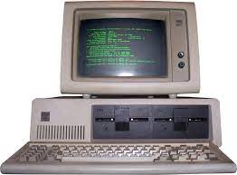

<!DOCTYPE html>
<html lang="en">
    <head>
        <title>A historia da internet - 1970</title>
    </head>
</html>
<style>
    h1{
       font-size: 100px;
       color:blue;
       font-family: 'Segoe UI', Tahoma, Geneva, Verdana, sans-serif;
       text-align: center;
       
   }
</style>
<h1>A internet em 1970</h1>
<center>
    <body></body>
    </center>
    <style>
        body{font-size: 30px;
            color: black;
            font-family:Verdana, Geneva, Tahoma, sans-serif;
            text-align: center;
            }
    </style>
    <body>
          <p>
            <p>1970, a ARPANET estava consolidada com centenas de computadores conectados.</p> 
           <p>Crocker e sua equipe do Network Working Group estabeleceram o protocolo de controle
            chamado Network Control Protocol (NCP), que permitia o desenvolvimento de aplicativos
            a partir dos computadores conectados à ARPANET.</p> 
          <p>Foi assim que, em 1972, Ray Tomlinson criou o software básico de e-mail, que 
            se tornou o aplicativo mais importante da década e mudou a natureza da comunicação 
            e colaboração entre as pessoas.</p>
            <p>impacto foi tão grande que a ARPANET se afastou gradativamente do uso 
                militar, aproximando-se do uso científico na disseminação de informações. 
                Por esse motivo, em 1974, mais de 50 universidades americanas estavam conectadas à ARPANET.</p>
          </p>
    </body>
    <center>
        <a font href="anos 1980.html">anos 1980</a>
        <a font href="Trabalho.html">Voltar ao inicio</a>
    </center>